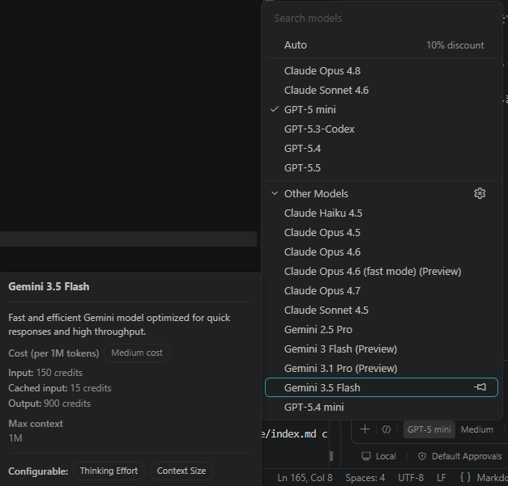

GitHub Copilotでは複数のAIモデルが選択可能ですが、用途に応じて最適なモデルを選択することが重要です。しかし、「結局どれを使えばいいのか？」に悩む方は多いはずです。以下に、GitHub Copilotのモデル一覧と、用途別の推奨モデルをまとめました。
なお、この一覧は2026年6月時点のもので、モデルの追加や価格変更がある可能性があります。最新情報は公式ドキュメントを参照してください。
Copilotはモデルごとに以下が大きく異なります。
特に重要なのは コスト差 で、モデルによっては 最大50倍の価格差があります（後述）。

以下は 入力トークン単価ベースで並べたものです。
| モデル | 入力 | 出力 | 特徴 |
|---|---|---|---|
| GPT-5.4 nano | $0.20 | $1.25 | 最安・最低性能 |
| GPT-5 mini | $0.25 | $2.00 | コスパ最強 |
| Raptor mini | $0.25 | $2.00 | 高速補完 |
| モデル | 入力 | 出力 | 特徴 |
|---|---|---|---|
| Gemini 3 Flash | $0.50 | $3.00 | 軽量・高速 |
| MAI-Code-1-Flash | $0.75 | $4.50 | 実務向け |
| GPT-5.4 mini | $0.75 | $4.50 | 軽量高性能 |
| モデル | 入力 | 出力 | 特徴 |
|---|---|---|---|
| Claude Haiku 4.5 | $1.00 | $5.00 | 軽量Claude |
| Gemini 2.5 Pro | $1.25 | $10.00 | 中性能 |
| Gemini 3.5 Flash | $1.50 | $9.00 | バランス |
| GPT-5.3-Codex | $1.75 | $14.00 | 高品質コード |
| モデル | 入力 | 出力 | 特徴 |
|---|---|---|---|
| Gemini 3.1 Pro | $2.00 | $12.00 | 高度推論 |
| GPT-5.4 | $2.50 | $15.00 | 汎用上位 |
| Claude Sonnet | $3.00 | $15.00 | バランス高 |
| モデル | 入力 | 出力 | 特徴 |
|---|---|---|---|
| GPT-5.5 | $5.00 | $30.00 | 最上位 |
| Claude Opus | $5.00 | $25.00 | 高度推論 |
| モデル | 入力 | 出力 | 特徴 |
|---|---|---|---|
| Claude Fable 5 | $10.00 | $50.00 | 最強モデル |
GPT-5.4 nano ($0.20)
↓
Claude Fable 5 ($10.00)
= 約50倍モデル選択を間違えるとコストが爆発します
ここが一番重要です。
結論
とりあえず GPT-5 mini を使えばOK
結論
速度重視なら Haiku / Flash
結論
品質を上げたいときだけ切替
結論
難問専用（常用禁止）
結論
大量処理専用
| 状況 | モデル |
|---|---|
| 軽い | Haiku / Flash |
| 普通 | GPT-5 mini |
| 少し難しい | Codex / Sonnet |
| 難しい | GPT-5.5 / Opus |
普段：安いモデル（90%）
難問：高性能（10%）これだけで大幅にコスト削減可能
以下では、**プロンプト難易度ごとの具体例を新たに作成しつつ、「実務での実測に近いコスト感」＋「モデル別の結果品質」**を整理します。
（※トークン量は実務でよくある規模をもとにした現実的な近似）
docs仕様書.md内の「エラーハンドリング」セクションから
try-catchの説明部分だけ削除し、構成を整えて出力せよ| モデル | コスト | 品質 |
|---|---|---|
| GPT-5.4 nano | 約 $0.6 | △ 文崩れ・削除ミスあり |
| GPT-5 mini | 約 $0.7 | ◎ 十分安定 |
| Claude Haiku | 約 $3〜4 | ◎ 速い・正確だが割高 |
| GPT-5.5 | 約 $25 | ◎ 過剰 |
最適
GPT-5 mini
NG
高性能モデル（完全無駄）
Reactの既存ログイン画面に「パスワード可視化トグル」と
ログイン失敗時のトースト通知を追加せよ。
既存の状態管理を維持せよ。| モデル | コスト | 品質 |
|---|---|---|
| GPT-5 mini | 約 $2 | ○ 軽微な修正必要 |
| MAI-Code | 約 $4 | ◎ 実務レベル |
| GPT-5.3 Codex | 約 $15 | ◎ 高品質 |
| Claude Sonnet | 約 $18 | ◎ UI理解強い |
| GPT-5.5 | 約 $70 | ◎ 過剰 |
最適
MAI-Code / GPT-5 mini（軽量）
Codex / Sonnet（品質重視）
注文管理APIを新規実装せよ。
CRUDに加え、ステータス変更時のイベント発火と
監査ログの保存も実装すること。
既存のRepositoryパターンに従うこと。| モデル | コスト | 品質 |
|---|---|---|
| GPT-5 mini | 約 $3.5 | △ 設計が浅い |
| MAI-Code | 約 $8 | ○ 実装可能だが粗い |
| GPT-5.3 Codex | 約 $35 | ◎ 実務品質 |
| Claude Sonnet | 約 $40 | ◎ 設計込みで優秀 |
| GPT-5.5 | 約 $150 | ◎ 完璧だが高い |
最適
GPT-5.3 Codex / Claude Sonnet
決済処理でランダムに二重請求が発生する問題を調査せよ。
ログ、非同期処理、トランザクション境界を考慮し、
原因特定と修正案を提示せよ。| モデル | コスト | 品質 |
|---|---|---|
| GPT-5 mini | 約 $6 | ✕ 誤推論多い |
| GPT-5.3 Codex | 約 $55 | △ 一部不完全 |
| Claude Sonnet | 約 $70 | ◎ 実務レベル |
| GPT-5.5 | 約 $300 | ◎ 高精度 |
| Claude Opus | 約 $280 | ◎ 最強クラス |
最適
Claude Sonnet（コスパ）
GPT-5.5 / Opus（最難）
10万件のアクセスログを解析し、
エラー種別ごとに分類し、ランキングを出力せよ。| モデル | コスト | 品質 |
|---|---|---|
| GPT-5.4 nano | 約 $30 | △ 粗い |
| GPT-5 mini | 約 $40 | ○ 実用 |
| GPT-5.3 Codex | 約 $180 | ◎ 高精度だが高すぎ |
最適
GPT-5 mini
-> 節約 nano
| タスク | コスト |
|---|---|
| 軽作業 | $0.5〜1 |
| UI改修 | $2〜5 |
| API開発 | $8〜40 |
| デバッグ | $50〜300 |
| 大量処理 | $30〜100 |
軽い → GPT-5 mini
普通 → MAI / Codex
重い → Sonnet
最難 → GPT-5.590% → GPT-5 mini
8% → Codex / Sonnet
2% → GPT-5.5「普段は安く、難しいときだけ強いモデル」
| 役割 | モデル |
|---|---|
| デフォルト | GPT-5 mini |
| 軽作業 | Haiku / Flash |
| 開発強化 | Codex / Sonnet |
| 難問 | GPT-5.5 / Opus |